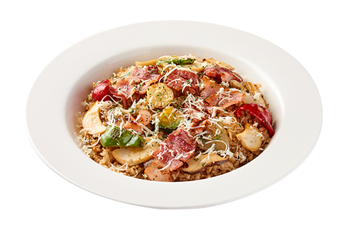
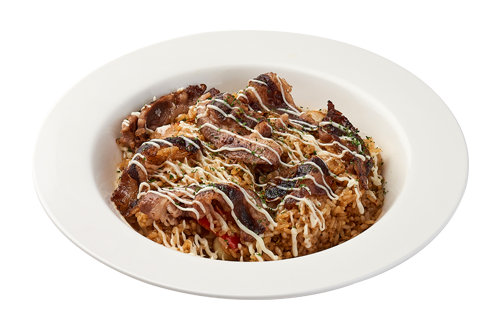
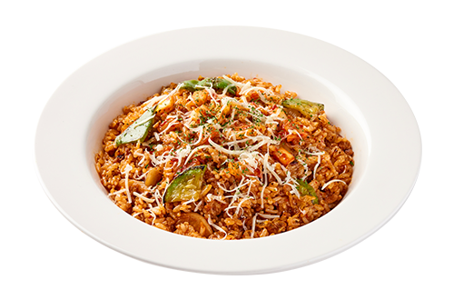
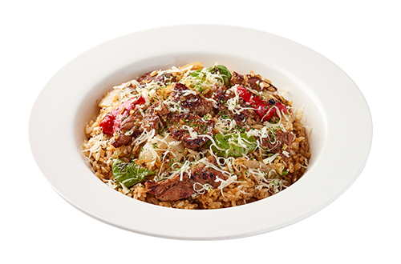
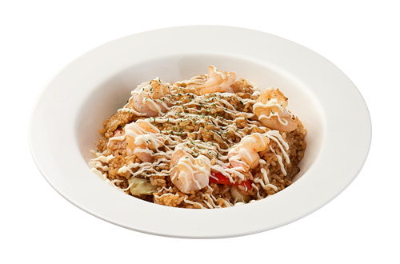
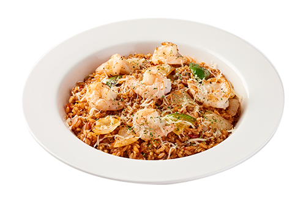

Our restaurant pilaf is cooked with recipes that are easy to make at home. There is only a technical difference. First, cut the rice and the ingredients that will accompany the meat, seafood, vegetables, etc. to a size that is easy to eat, and lightly fry it over low heat. The rice is then fried in oiled and sweetened pans. Season the fried rice, meat, and vegetables with salt, spices, and broth.

Mushroom Bacon Pilaff: Fresh mushrooms in savory bacon Light pilaf with flavor.

Beef Brisket Pilaff: Stir-fry with marbling and side garlic Pilaf with a savory taste.

Kimchi pilaff: Spicy and Sour Kimchi, Kimchi pilaf perfect for spicy taster.

Pork Neck Pilaff: Roast a thick neck steak on the grill Best pilaf with deep flavor.

Shrimp Pilaff: Put chubby shrimp popping Shrimp and light dishes.

Shrimp Hot Chilli Pilaff: Fresh shrimp and spicy hot chili Meet Spicy Shrimp Pilaf.